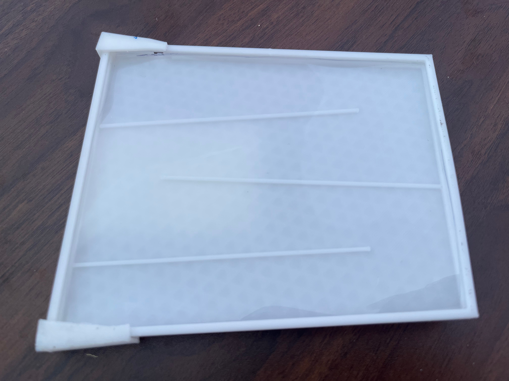
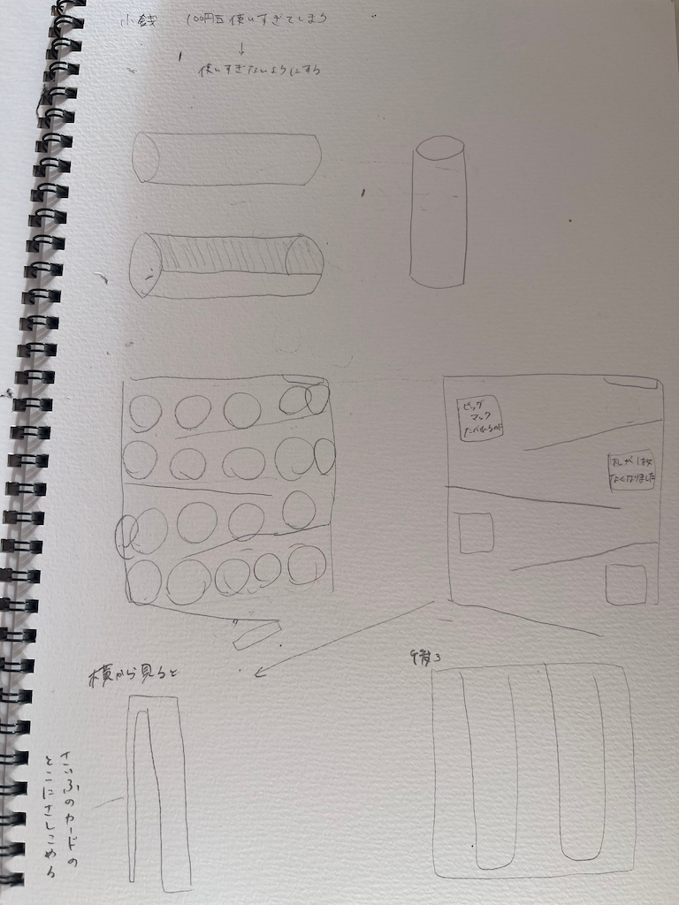

設計ファイル
作品説明
自分が使った分の小銭を視覚的に分かりやすくして、お金を使うときに危機感を覚えさせるように設計したコインケースです。
背面の部分はポケットやお財布にはめられるので、持ち運びやすくなってます。
構想段階でのスケッチ

この作品を作ろうという思いに至るまで
お札とは違って小銭は使うことに抵抗感がなくなってしまいがちなので、使いすぎ防止のために作りました。また、自分自身も普段からガチャガチャを回して気がついたらでお金がなくなっているので、自分と似た境遇にある人にも届いたら良いなと思います。
１００円も１０枚使えばビッグマックが２つ買えます。
感想
今回の授業では、日常生活の中で周囲の人の行動に目を向け、その理由や背景を考えることから作品を制作しました。普段は何気なく見過ごしてしまう動きや行動について、「なぜこの動きをしたのだろう」「どのような悩みや不便があるのだろう」と考えることで、新しい視点を持つことができました。
また、その人本人や周囲の人の悩みを解決するためにはどうすればよいかを考え、それを形にしていく過程が印象に残りました。単に物を作るのではなく、人の行動や気持ちを理解することが、ものづくりの出発点になることを学びました。
今回の授業を通して、日常の観察から発想を広げ、課題解決につなげる考え方の大切さを実感しました。今後も身の回りに目を向けながら、よりよいアイデアを考えていきたいと思います。